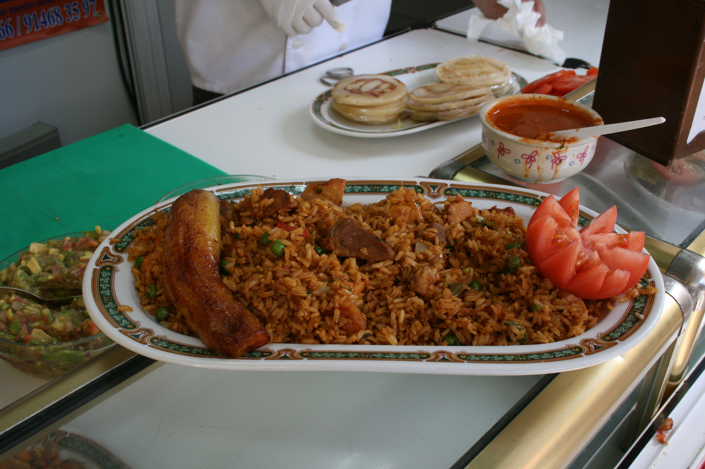

Lechona is often eaten during large gatherings such as Christmas, big birthdays, or inaugurations. For this reason, the cook typically needs a whole pig and a lot of time (generally half a day of cooking) to prepare it. However, for the purposes of this webpage, we'll show you a way to prepare the dish for fewer people and inv less time.
In most cases it is also served with some sides like vegetables, arepas or fruits (plaintains)